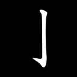
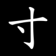
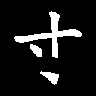
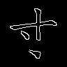

{kind=link}
s1b810c526767
先判断：明显结构异常 / 合法可接受 / 不确定或不可读。
判断后展开原字、完整笔画和 mask
来源字：寸；单笔内部断裂；原笔画序号（从 1 开始）：[2]




{"attempts": 1.0, "break_after_parts_96_t128": 2.0, "break_after_parts_96_t9": 2.0, "break_after_parts_native_t128": 2.0, "break_after_parts_native_t9": 2.0, "break_before_parts_96_t128": 1.0, "break_before_parts_96_t9": 1.0, "break_before_parts_native_t128": 1.0, "break_before_parts_native_t9": 1.0, "break_center_x_96": 54.625, "break_center_y_96": 65.125, "break_part_1_area_96_t128": 226.0, "break_part_1_area_96_t9": 300.0, "break_part_1_area_native_t128": 398.0, "break_part_1_area_native_t9": 498.0, "break_part_1_length_96_t128": 43.0, "break_part_1_length_96_t9": 44.0, "break_part_1_length_native_t128": 58.0, "break_part_1_length_native_t9": 58.0, "break_part_1_support_96_t128": 43.0, "break_part_1_support_96_t9": 45.0, "break_part_1_support_native_t128": 59.0, "break_part_1_support_native_t9": 59.0, "break_part_2_area_96_t128": 103.0, "break_part_2_area_96_t9": 134.0, "break_part_2_area_native_t128": 176.0, "break_part_2_area_native_t9": 211.0, "break_part_2_length_96_t128": 18.0, "break_part_2_length_96_t9": 19.0, "break_part_2_length_native_t128": 31.0, "break_part_2_length_native_t9": 27.0, "break_part_2_support_96_t128": 18.0, "break_part_2_support_96_t9": 18.0, "break_part_2_support_native_t128": 28.0, "break_part_2_support_native_t9": 27.0, "break_visible_gap_96_t128": 15.5906982421875, "break_visible_gap_96_t9": 14.984498977661133, "broken_stroke_count": 1.0, "changed_fraction": 0.13987730061349693, "gap_length": 21.878395631909235, "gap_length_96": 16.40879672393193, "glyph_scale": 96.0, "input_changed_fraction": 0.14470284237726097, "input_changed_pixels": 112.0, "input_edge_changed_pixels": 46.0, "input_foreground_changed_pixels": 106.0, "local_stroke_width": 8.0, "local_stroke_width_96": 6.0}下载操作前后笔画层（NPZ）